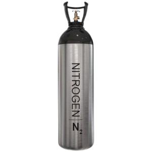
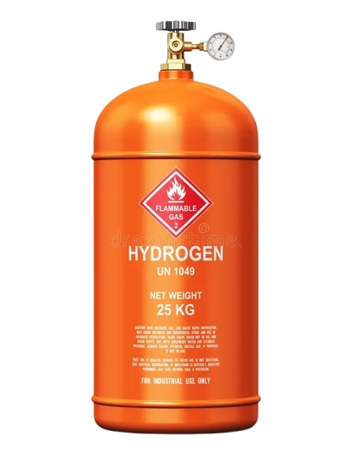
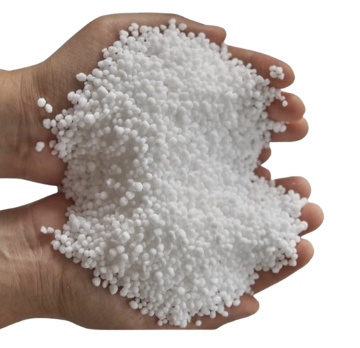
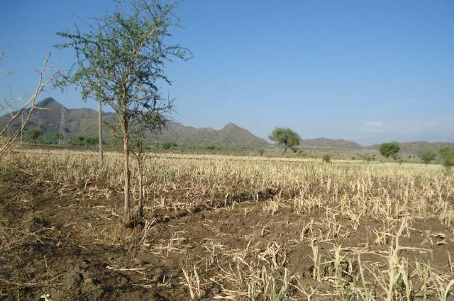
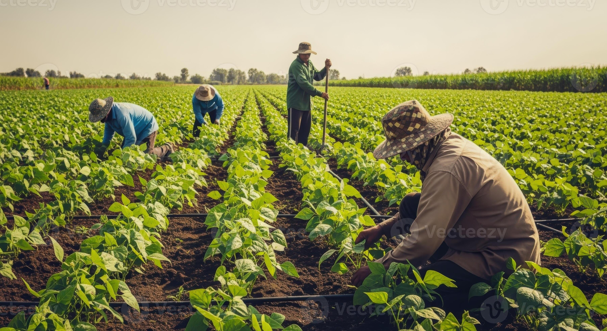
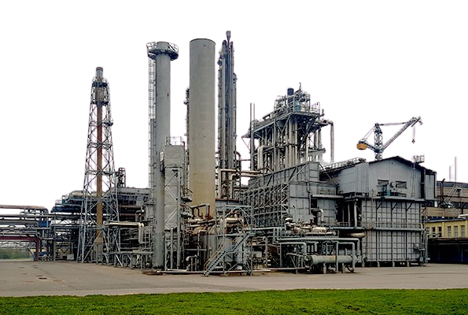
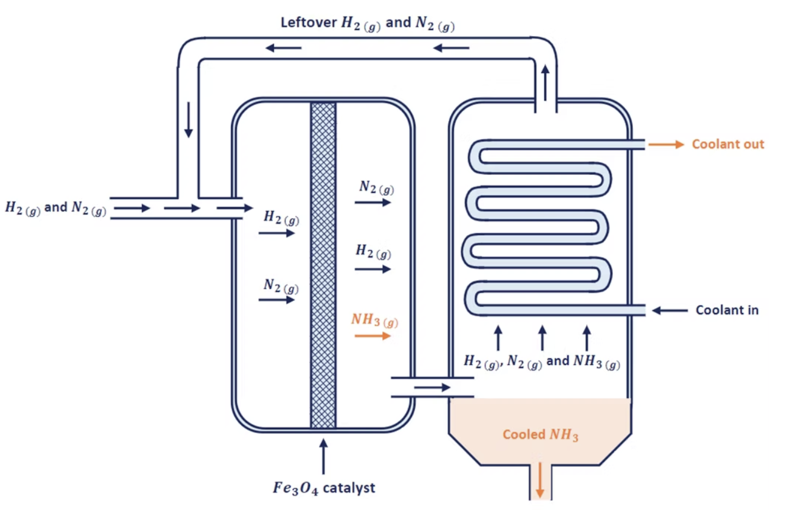
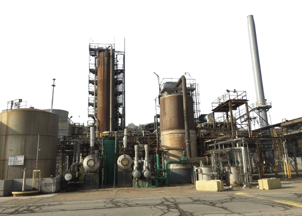
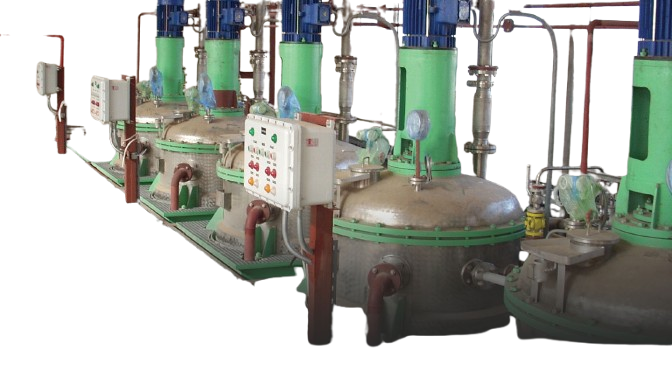
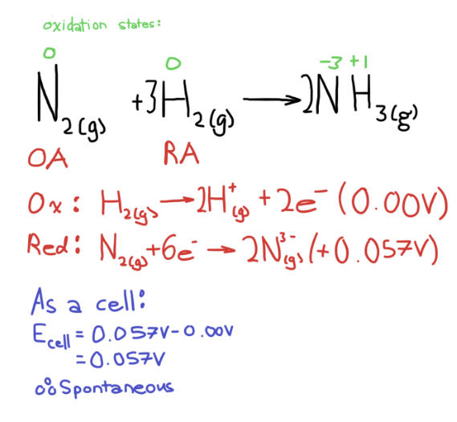

Haber Process: industrial method used to synthesize ammonia (NH₃) from nitrogen and hydrogen gases on a large scale.
Nitrogen
N₂

Hydrogen
H₂

Ammonia
NH₃

What it does
Combines nitrogen gas (N₂), usually obtained from air, with hydrogen gas (H₂), under specific conditions to produce ammonia.
Overall chemical reaction:
N₂(g) + 3H₂(g) ⇌ 2NH₃(g)
A reversible reaction, it can go forward to produce ammonia and backward to produce nitrogen and hydrogen.
How it works
In the industry, the Haber Process sees nitrogen and hydrogen gases pumped into chambers of high temperatures and pressure, where they undergo the redox reaction to form ammonia.
History
The method was developed by Fritz Haber in the early 1900s and scaled for industrial use by Carl Bosch, allowing for large scale ammonia production.
Societal Benefits
Transforming Agriculture and Feeding the World
1. Food Production
Pre-Haber

Modern Agriculture

🌾
Ammonia from the Haber Process creates nitrogen-based fertilizers for growing crops. Billions of people were fed, and widespread famine avoided.
230 million tonnes
of ammonia produced per year as of 2018.
Major facilities
in Europe, North America, China, Middle East.
9.9 billion tonnes
of primary crops produced in 2023.
The Haber Process is a key contributor to humanity's food supply and production, allowing for our rapid population growth in recent years.
Societal Benefits
Before and After Industrialization
2. Reliance on Scare Nitrogen Sources
Before Haber, nitrogen fertilizers came from geographically limited deposits (eg. Chilean nitrates, animal manure from tropical islands).
Haber Process made converting inert atmospheric nitrogen gas (N₂) to usable compounds like ammonia an industrial and scalable process.
Countries relieved of geopolitical dependence from imports and mining.
Enabled the widespread growth of global agriculture.
Natural Deposits
Industrialized
Concerns and Challenges
Understanding the Downsides of Industrial Ammonia Production
Greenhouse Gas Emissions

The Haber Process uses energy and fossil fuels (like natural gas) to provide the required high temperatures and pressures.
This contributes significantly to greenhouse gas emissions, as the production of ammonia accounts for 1 - 2% of global CO₂ emissions.
Water Pollution
🌾
🌾
🌾
🌾
🌾
🌾
🌾
🌾
🌾
🌾
🌾
🌾
🌾
🌾
🐟
🐟
🐟
Nitrogen from ammonia fertilizers will run off into bodies of water after heavy rainfall or irrigation.
This richness of nutrients causes unhealthy amounts of algae growth that deprives aquatic wildlife of oxygen.
Toxicity
👷
NH₃
⚠️
🥽
🫁
Ammonia (NH₃) is corrosive and toxic at high concentrations. Effects include irritation and damage to the skin, eyes, and lungs if factory workers are exposed to these levels, with a major concern being respiratory distress.
Practical Examples
Real-World Applications and Industrial Processes
1. Ammonia Production for Fertilizer
Chemical plants produce ammonia via the Haber Process to make nitrogen-based fertilizers.
🌱

🫙
Ammonia itself is a fertilizer which can be injected into soil, it has an 82% nitrogen content, an essential nutrient for plants.
Firstly, nitrogen (from the air) and hydrogen (often from methane (CH4)) pass over layers of an iron oxide catalyst mesh to form ammonia.
Reaction occurs at 350 - 550 °C under a pressure of 150 - 350 atm.
Chemical reaction: N2(g) + 3H2(g) → 2NH3(g)
Secondly, ammonia and unreacted nitrogen and hydrogen pass through a cooling system. Ammonia, with the highest boiling point, condenses first and collects as a liquid at the bottom of the chamber.
The unused nitrogen and hydrogen gas will be fed back into the first chamber, continuing the process.
Practical Examples
Real-World Applications and Industrial Processes
2. Manufacturing of Explosives
Chemical companies utilize the ammonia from Haber plants to produce nitric acid (HNO3) (which uses the Ostwald Process). Nitric acid plants can be found worldwide in integrated chemical facilities (e.g. BASF in Germany).
Haber
Haber Process: N2(g) + 3H2(g) → 2NH3(g)
Ostwald

Ammonia from the Haber is oxidized to nitric oxide in the Ostwald Process: 4NH3 + 5O2 → 4NO + 6H2O. Nitric oxide further oxidizes: 2NO + O2 → 2NO2. Then dissolves in water: 3NO2 + H2O → 2HNO3 + NO, to form nitric acid (HNO3).
Explosives
💥

Nitric acid, with the ammonia feedstock from the Haber Process as the fundamental step, is used to produce nitrogen-based explosives like TNT or Ammonium Nitrate Fuel Oil (ANFO).
Connection to Electrochemistry
Overall Chemical Reaction
N2(g) + 3H2(g) ⇌ 2NH3(g)
Oxidation and Reduction Roles
Hydrogen is oxidized (0 to +1), each atom loses 1 electron, hydrogen gas (H2(g)) is the reducing agent.
Nitrogen is reduced (0 to -3), each atom gains 3 electrons, nitrogen gas (N2(g)) is the oxidizing agent.

Redox Connection
Redox reaction as oxidation and reduction happen simultaneously. Oxidation numbers change and electrons are transferred from hydrogen to nitrogen.
Because the actual industrial process is done in a gaseous state, not an electrochemical cell, standard reduction potentials are not useful, but shown to demonstrate the concept.
Techniques to Increase Rate of Reaction
Using an iron catalyst such as Fe2O3 can weaken triple bonds of diatomic nitrogen particle.
Increasing temperature increases rate of reaction. Raising it too far will reverse the reaction and decrease yield. Therefore, a “low” temperature of 450 degrees Celsius is used.
Increasing the pressure will increase the rate of reaction.